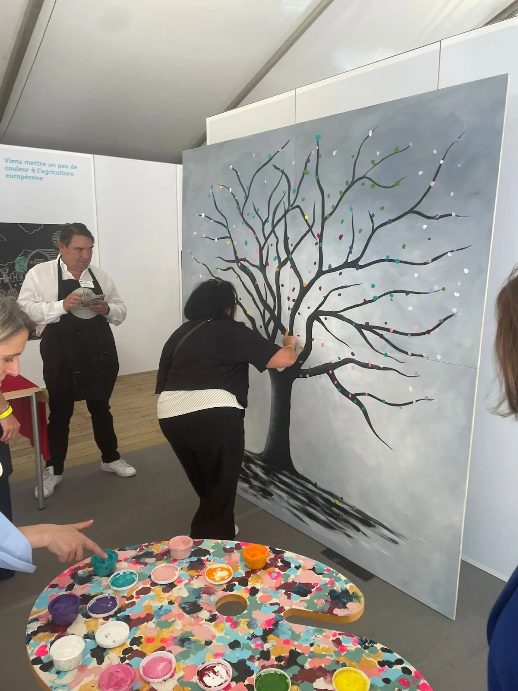
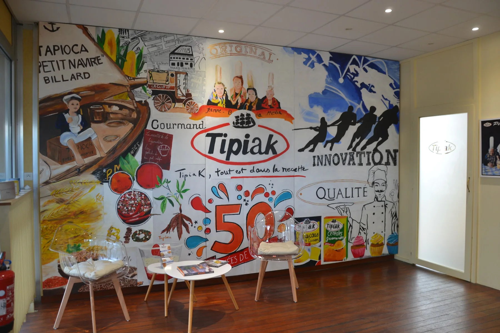
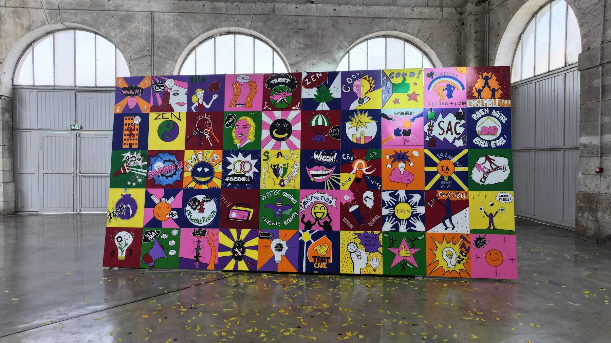

L’Art de rendre
vos événements inoubliables.
Une fresque participative ou un arbre à empreintes donne aux invités une place active dans l’événement et crée une œuvre qui continuera à raconter ce moment.


L’événement devient matière à créer.
Anniversaire d’entreprise, inauguration, salon, soirée ou séminaire : la peinture crée un point de rencontre visible, participatif et mémorable.
Arbre à empreintes
Un geste simple et collectif qui transforme la participation en œuvre symbolique.
Fresque anniversaire
Raconter l’histoire, les valeurs et l’avenir d’une entreprise à travers une composition partagée.

Mur d’expression
Inviter les participants à laisser une trace, un message ou un élément graphique pendant l’événement.
Créer là où l’entreprise se rassemble.
Les formats présentés par Nathalie ont été pensés pour des séminaires, team building, événements clients, salons, soirées, anniversaires d’entreprise, inaugurations, portes ouvertes ou assemblées générales.
Comprendre l’événement
Contexte, message, public et place de l’animation dans le programme.
Concevoir le geste
Définir une participation simple, lisible et adaptée au nombre de personnes.
Faire vivre l’œuvre
Accompagner les participants au fil de l’événement sans casser son rythme.
Révéler la trace
Finaliser une création collective qui prolonge l’événement après sa clôture.